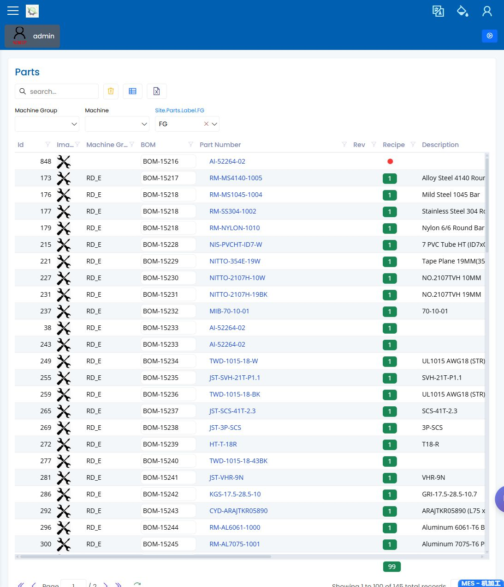

Planner Manual
English | zh-CN
You are the production planner. You turn demand into scheduled, released, and monitorable work orders. You depend on production engineering for valid recipes and routings, and quality engineering for inspection readiness.
First-Day Checklist
Use this before releasing a first sample WO or training scenario.
| Check | Open | Safe result | Stop if |
|---|---|---|---|
| Access | Admin Setup Checklist | Planner role can open Production Orders, Planning, Queue System, and Dashboards. | Role or permission labels are needs-decision. |
| Item readiness | Parts, BOM | The part revision and BOM structure match the training WO. | Part or structure is missing. |
| Route readiness | Recipes, Machines, NC Programs | Recipe, machine/work area, and NC program are visible for the selected work. | Route or machine capability is unclear. |
| Golden sample WO | Planner cold-start walkthrough | The WO can be searched or created using confirmed controls. | Release, schedule, or status action is unlabeled. |
| Queue verification | Queue System | The WO/job appears under the expected filter and maps to a documented queue state. | Dispatch or queue-ready label is unclear. |
Planning Flow
Demand arrives
|
v
Check part, BOM, recipe, machine readiness
|
v
Create or generate WOs
|
v
Schedule WOs on Planning page
|
v
Release to shop floor
|
v
Monitor queue, dashboards, and exceptionsScreens You Use Most
| Screen | What you do here |
|---|---|
| Parts and BOM Master | Confirm the item being planned exists and has the expected structure. |
| Recipes | Confirm the selected recipe/routing is valid before generating WOs. |
| Production Orders | Create WOs, inspect generated child orders, set quantities and dates, and use allowed status actions. |
| Planning | Schedule WOs across dates, machine groups, and planning views. |
| Queue System | Confirm released work appears in the execution queue. |
| Dashboards | Open OEE, KPI Production, and Main Layout as entry points; treat metric definitions as pending owner confirmation. |
| Status actions | Review visible status/action icons only when they are labeled or confirmed by the owner. |
Before Creating A Work Order
- Confirm the Part and revision are correct.
- Confirm the BOM is ready for the planned quantity.
- Confirm a Recipe exists for the planned production route.
- Confirm the required machine groups and shifts are available.
- Confirm QA is ready if the work requires inspection.
Daily Planning Routine
| Time | Action |
|---|---|
| Start of day | Review open demand, WOs due today, and blocked WOs. |
| Before release | Check part, BOM, recipe, quantity, due date, and machine group. |
| During shift | Watch Queue System and respond to supervisor escalations. |
| After changes | Recheck Planning so the schedule matches the floor. |
| End of day | Review Dashboards and WOs that need rescheduling, cancellation, or force-close review. |
Escalation Rules
- Escalate recipe, route, machine capability, cycle-time, or NC program issues to the production engineer.
- Escalate failed or missing inspection setup to the quality engineer.
- Escalate user access or missing permissions to the administrator.
Common Questions
| Question | Likely cause | Next step |
|---|---|---|
| Generated WOs are missing expected child orders | Recipe or process definition is incomplete | Ask production engineering to review recipe/process setup |
| Planning board is empty | Date range, machine group, or planning page filter excludes the work | Widen filters and check the WO status |
| WO appears in planning but not queue | WO may not be released or queue page filter differs | Check status and queue filters |
| WO is stuck in progress | Child work may still be open or quantity is incomplete | Check the visible status and escalate to the supervisor before using any unclear action icon |
Screenshots
Recommended screenshots for this role:
| Capture | Suggested page |
|---|---|
| Work order list and action toolbar | Production Orders |
| Planning board | Planning |
| Machine queue | Queue System |
| OEE/KPI review | Dashboards screenshot request |
| Part readiness | Parts |
| BOM structure | BOM |

The production orders screenshot shows the authenticated work-order list, filters, action toolbar, and row status indicators.

The planning screenshot shows the authenticated planning workspace used to review scheduled load and planning views.

The parts screenshot shows the authenticated list used to confirm that the item being planned exists and is ready for production review.

The BOM screenshot shows the authenticated structure page used to confirm parent and child material relationships.
The Dashboards pages still need separate OEE, KPI Production, and Main Layout screenshots before this role page can describe those metrics in detail.